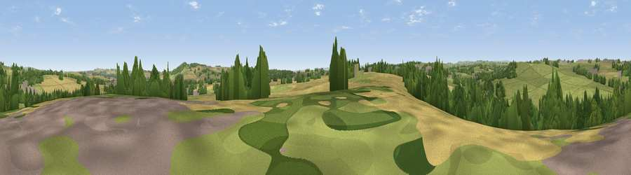

Viewpoint near West Auckland
#34906 in England · top 82% of its area beats it · near West AucklandThe view, rendered

A 360° render of this exact spot computed from the terrain model, tree cover and land cover — summer colours, afternoon light, calibrated against photographs of famous viewpoints. Real trees, hedges and buildings will differ in detail.
The panorama
Grey silhouette: terrain skyline in each direction (720 bearings, Earth curvature and refraction included). Dashed green: skyline with trees (+15 m) and buildings (+8 m) as obstacles. Blue strip: how far the ground is visible on each bearing.
Where the view opens
Wedge length = distance to the farthest visible ground on that bearing (vegetation-aware). Rings at 10, 25 and 50 km.
What fills the view
57% grassland · 21% cropland · 18% woodland · 4% built-up
Angular shares of the visible panorama (visual magnitude), not map area. Landscape diversity 0.47 (0–1 Shannon).
Key numbers
More beautiful places nearby
The staircase of upgrades: each row has a higher view potential than everything closer. Driving times are estimates from straight-line distance, calibrated against real road routing — check an actual route before setting out.
| Place | Direction | Drive | Score |
|---|---|---|---|
| Viewpoint near Ramshaw | WNW · 2 km | ~4 min | 46.0 |
| Viewpoint near Toft Hill | NW · 3 km | ~7 min | 57.9 |
| Viewpoint near St Helen Auckland | ESE · 4 km | ~8 min | 70.3 |
| Viewpoint near Eggleston | W · 15 km | ~27 min | 76.0 |
| Pontop Pike | N · 27 km | ~43 min | 77.8 |
| Viewpoint near Newton Under Roseberry | ESE · 39 km | ~58 min | 78.3 |
| Viewpoint near Ingleby Cross | SE · 39 km | ~58 min | 82.4 |
| Beacon Hill | SE · 39 km | ~59 min | 84.7 |
54.62909, -1.74400 · source: screening · position refined by local search. Computed location — check access rights before visiting.